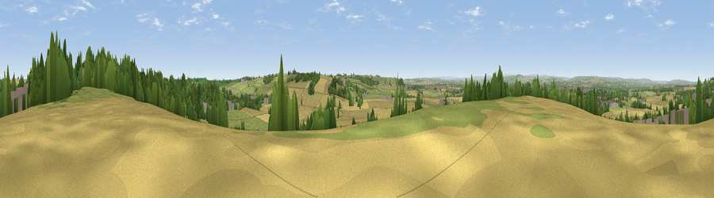

Viewpoint near Sherburn Hill
#9278 in England · top 12% of its area beats it · near Sherburn HillThe view, rendered

A 360° render of this exact spot computed from the terrain model, tree cover and land cover — summer colours, afternoon light, calibrated against photographs of famous viewpoints. Real trees, hedges and buildings will differ in detail.
The panorama
Grey silhouette: terrain skyline in each direction (720 bearings, Earth curvature and refraction included). Dashed green: skyline with trees (+15 m) and buildings (+8 m) as obstacles. Blue strip: how far the ground is visible on each bearing.
Where the view opens
Wedge length = distance to the farthest visible ground on that bearing (vegetation-aware). Rings at 10, 25 and 50 km.
What fills the view
44% cropland · 30% grassland · 19% woodland · 7% built-up
Angular shares of the visible panorama (visual magnitude), not map area. Landscape diversity 0.54 (0–1 Shannon).
Key numbers
More beautiful places nearby
The staircase of upgrades: each row has a higher view potential than everything closer. Driving times are estimates from straight-line distance, calibrated against real road routing — check an actual route before setting out.
| Place | Direction | Drive | Score |
|---|---|---|---|
| Viewpoint near Cassop | SSE · 3 km | ~6 min | 66.3 |
| Viewpoint near Bowburn | SSW · 4 km | ~8 min | 69.0 |
| Viewpoint near Quarrington Hill | S · 4 km | ~9 min | 73.1 |
| Viewpoint near Houghton-le-Spring | NNE · 10 km | ~19 min | 73.7 |
| Viewpoint near Houghton-le-Spring | NNE · 10 km | ~19 min | 76.0 |
| Viewpoint near Sunniside | NW · 20 km | ~33 min | 77.6 |
| Pontop Pike | WNW · 21 km | ~36 min | 77.8 |
| Viewpoint near Newton Under Roseberry | SE · 33 km | ~51 min | 78.3 |
54.77048, -1.48431 · source: screening · position refined by local search. Computed location — check access rights before visiting.